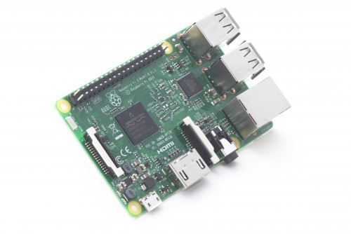
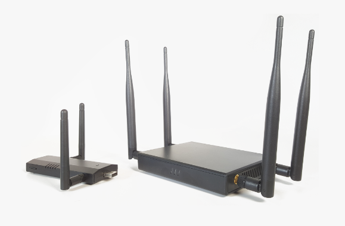
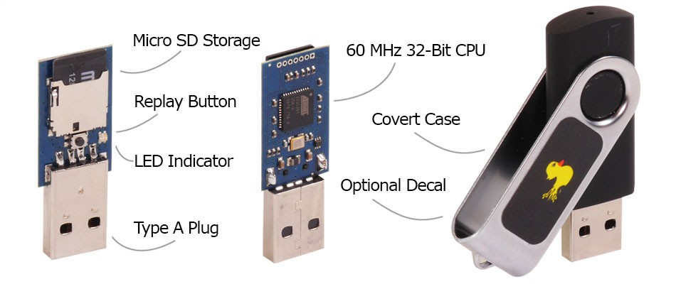
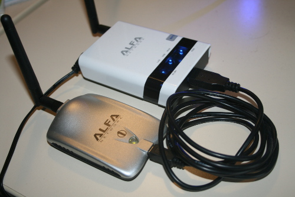
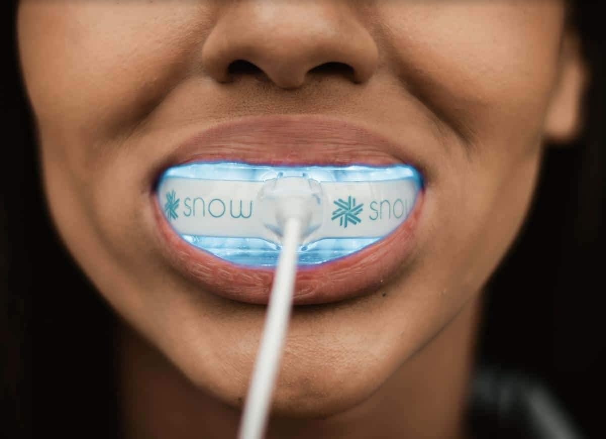
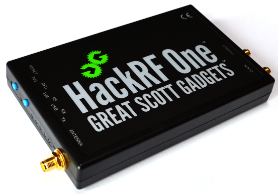
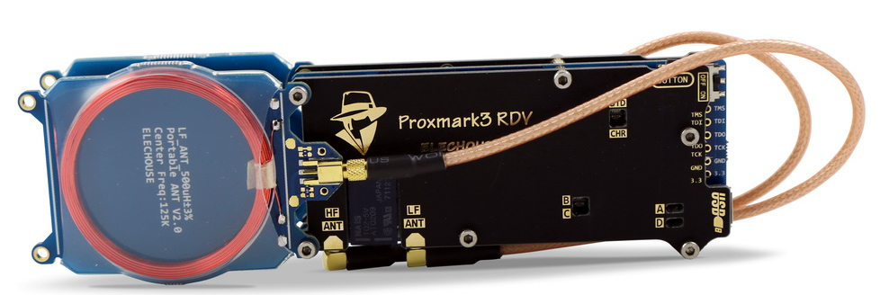
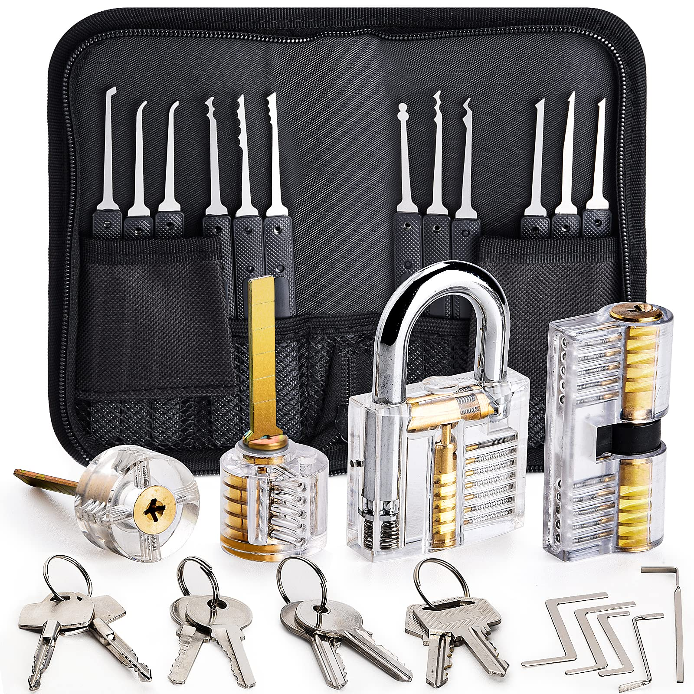

10 Top Hackers Tools You've Probably Never Heard Of
With so many new products and gadgets coming to market every day, it's no wonder you have not heard anything about them. We have decided to put together an up-to-date list of 10 different US products that are now available in [geo:ip] - many of which have been crowdfunded. You can add them to your own wish list or as gifts for your loved ones! If you would like more information about the products or to buy them, just click on the links in the article. These fantastic products come with a fun guarantee and will impress you and your friends. So, test it out!
1. Raspberry Pi 3

We are now on the third generation of these low-budget computers, which can be used in multiple ways. A classic example in security audits is to use a Raspberry Pi with its appropriate battery pack, a distribution platform like Kali Linux, and applications like FruityWifi, which together act like the Swiss army knife of pen testing.
Click Here To Learn More About Raspberry Pi 3 on Amazon
2. WiFi Pineapple*

This set of tools for wireless penetration tests is very useful for various types of attacks, such as man-in-the-middle attack. Through an intuitive web interface, it enables you to connect using any device, such as a smartphone or a tablet. It stands out for its ease of use, workflow management, the detailed information it provides, and the possibility it offers to emulate different kinds of advanced attacks, which are always just a couple of clicks away.
As a platform, WiFi Pineapple allows the use of a great many modules, which are continually being developed by the user community, thus adding new features that widen its scope of functionality. The icing on the cake is that these modules can be installed free of charge directly via the web interface in a matter of seconds.
Click Here To Learn More About WiFi Pineapple*
3. Rubber Duck*
This “special” pen drive is a device that works as a programmed keyboard in the shape of a USB drive. When you plug it into a computer, it starts writing automatically to launch programs and tools which may either be available on the victim computer or loaded onto the drive’s onboard Micro SD, in order to extract information.
If you watch the hit TV series Mr. Robot, you’ll likely remember that in the second season Rubber Ducky is a crucial ally for Angela, helping her gain access to an E Corp executive’s passwords.
Click Here To Learn More About Rubber Duck
4. Alfa Network Board*

A classic Wi-Fi board for injecting packets. The Alfa stands out for the quality of its materials, and for its use of chipsets which can be set to monitoring mode – a requirement for wireless audits.
Click Here To Learn More About Alfa Network Board*
5. LAN Turtle*

This type of systems admin and pen-test tool provides stealthy remote access, as it stays connected to a USB port covertly. Besides this, it allows users to harvest information from the network and has the capacity to execute a man-in-the-middle attack.
Click Here To Learn More Lan Turtle
6. Snow - A Million Dollar Smile In Under 9 Minutes A Day

It takes only 9 minutes a day to get a million-dollar smile without even visiting a dentist. Sounds impossible? Well, it is if you are not familiar with Snow! This revolutionary teeth whitening technology is changing the way people take care of their oral hygiene, being one of the most searched brands on Google and most popular at-home teeth whitening solution recommended by professionals and celebrities. “You only have one chance to make a strong first impression and my smile gets complimented the most, thanks to Snow,” says Demi Leigh, Miss Universe 2017.
While most light-activated systems use harmful UV rays or a simple light as a gimmick, Snow’s innovative LED technology and a photo-activated serum ensure the professional results that could be achieved at home by anyone, safely. Snow’s unique formula whitens the deepest stains, even those caused by years of smoking, drinking coffee, tea, or wine, without causing the sensitivity or other side effects, and does it as well as in-office dental treatments. The best part? It is totally affordable for an average person, comes with 100% guarantee, and donates profits from each sale to children who can’t afford the access to the dental care. To quote NFL star Rob Gronkowski, “It’s good for your teeth, and it’s good for the world – what else do you need?”
Click Here To Learn More About Snow
7. ClearView: The #1 Solution for Night Time Driving
Did you know that the vast majority of car accidents happen at night and right before dawn? A lot of that has to do with glare and the problems with vision which many people experience in the dark. Maybe that’s the reason why these driving glasses are selling by the truckload. ClearView promises to reduce night driving glare as well as the eye strain, and it will dramatically improve your vision at night during snow or in rainy conditions. It lets you see enhanced color, it's durable, lightweight and is fully equipped with polarized lenses.
Unlike clip-ons it protects your eyes from all sides, and you can just slide it over your existing prescription lenses. Whether driving, reading or golfing, these versatile goggles make seeing a whole new experience.
Click Here To Learn More About ClearView Night Glasse
8. HackRF one*

This tool installs a powerful SDR (Software-Defined Radio) system. In other words it is essentially a radio communication device which installs software to be used in place of typically installed hardware. This way, it is capable of processing all kinds of radio signals ranging from 10 MHz to 6 GHz from a single peripheral, which can be connected to the computer via a USB port.
Click Here To Learn More About HackRF one*
9. Proxmark4 *

If you’re like me and you don’t upgrade your phone every year, you need to buy the CircaCharge device.. Before I used to charge my phone for the entire night only for it to drain back to 0% after a few hours. Without getting the latest expensive phone, I purchased this thin adapter that turned my phone into a wireless charging device. Now my phone is always charged with my battery lasting much longer and even with it's performance highly improved. It feels like I got a new phone since now I can watch Netflix at any time without having to worry that its battery will drain out! Try this first before committing to a new phone.
Click Here To Learn More About Proxmark4
10. KeySmart – The Future Of Keychains

Do you have one of those bulky, noisy, messy & painful keychains? If so, then you definitely want to look into KeySmart, which allows you to hold all your keys, including your car key fob and many more in one elegant device! It is the SMART way to store your keys for easy access.
There is a reason why this gadget sold over 2 million units. It lets you attach all your keys in less than 60 seconds, regardless of their size and shape. With it, you can easily find the key you need, without them making any ridiculous jingly noises. And best of all, it’s even smaller than a pack of gum, weighing just 0.3oz. You can easily carry it with you wherever you go – in your jeans, in your wallet – anywhere!
And what’s best about this keychain is that it doesn't just hold your keys. You can customise it to hold all other accessories you need to make your life easier, including a 16 GB USB thumb drive, a bottle opener, a nano light, a pocket clip and even a quick disconnect link.
Click Here To Learn More About KeySmart